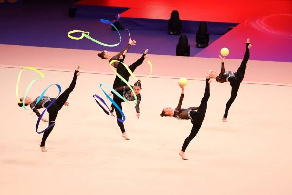

A ginástica rítmica é uma das modalidades esportivas mais graciosas e encantadoras, que combina elementos de dança, balé, acrobacias e a utilização de aparelhos como corda, arco, bola, maças e fita. Ela é uma expressão artística que exige do praticante não apenas habilidades físicas, mas também sensibilidade, coordenação e uma profunda conexão com a música. A modalidade surgiu no início do século XX, com influências do balé e da ginástica artística, mas foi na década de 1950 que começou a ganhar popularidade, especialmente na Europa, até se tornar parte dos Jogos Olímpicos em 1984, para as mulheres. Na ginástica rítmica, cada movimento é coreografado de forma precisa e fluida, criando uma sensação de leveza e harmonia. As atletas, com seu uniforme colorido e elegante, muitas vezes parecem se transformar em figuras etéreas que dominam o espaço ao seu redor. Cada apresentação é uma combinação de força e delicadeza, onde a destreza corporal se mistura com a musicalidade, transmitindo emoções para o público. O treinamento para se tornar uma ginasta rítmica é intenso e rigoroso. As atletas dedicam horas diárias para aprimorar sua flexibilidade, força, resistência e controle sobre os aparelhos. A ginástica exige uma perfeição técnica que, muitas vezes, passa despercebida pelos espectadores, pois os movimentos são tão fluídos que parecem naturais. Contudo, por trás de cada salto, giro e lançamento, há um trabalho árduo de repetição e superação de limites. Além da performance técnica, a ginástica rítmica é uma prática altamente mental. A concentração e a capacidade de manter a calma diante de uma plateia ou de um julgamento são essenciais para o sucesso. A presença de palco também é fundamental, pois o desempenho das ginastas não depende apenas da execução das habilidades, mas da sua capacidade de cativar o público e transmitir emoções através dos movimentos. A competição é outro aspecto importante dessa modalidade. As ginastas competem individualmente ou em grupos, com apresentações que têm duração de cerca de 1 a 2 minutos. Cada rotina é avaliada por um painel de juízes que considera fatores como a dificuldade dos movimentos, a execução técnica, a originalidade da coreografia, a integração com a música e a presença artística. A ginástica rítmica, assim, é um campo onde a técnica precisa estar perfeitamente alinhada à expressão artística, criando uma performance única a cada apresentação. O fascínio pela ginástica rítmica não reside apenas na sua beleza estética, mas também na complexidade do esporte, que exige uma combinação rara de força física, coordenação, habilidade com os aparelhos e, sobretudo, criatividade. As ginastas rítmicas, ao longo de sua jornada, tornam-se verdadeiras artistas, cuja habilidade de transformar movimentos em uma obra de arte continua a encantar plateias ao redor do mundo.
